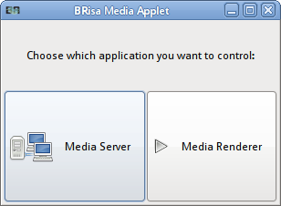
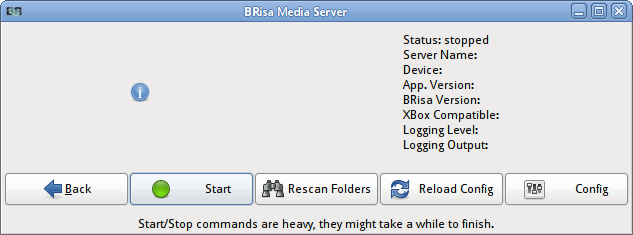
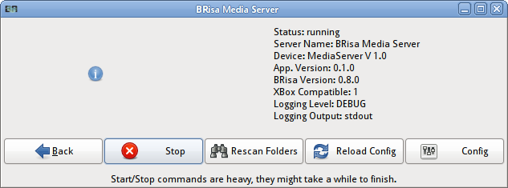
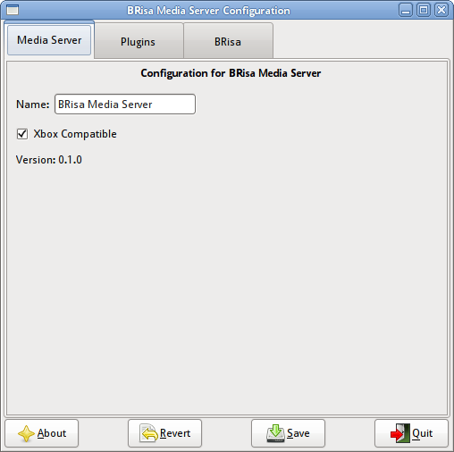

Running BRisa Applications
In this page we describe how to use BRisa applications (media server and media renderer).
Media Applet
This is an application that comes in the brisa-media-tools
package and can launch or stop the Media Server and the Media
Renderer.
For most cases, your window manager will detect our application and you can launch it directly from the main menu as shown above.
If not you may run the program called brisa-media-applet (from a terminal, for example).
When installing on Nokia maemo devices (N800, N810), you will be asked where you want to place the icon. For starting it, just go where you placed it and launch it.
Once started, you will choose the application to run/manage:

On this guide we have selected the Media Server application. The two images above show the Media Server window. If you want to start it, just press Start. The information board will update itself automatically and show that the program has started.


If you want to configure the media server, just click on Config. The configuration manager (second icon on the menu, on the first picture) will open. Change anything you want, Save it and Quit when done.

If you have modified anything on the configuration with the media server already running, you must press the Reload Config button for the changes to effectively apply. You can also restart it by hitting Stop then Start, but that's not practical.
Concerning the Media Renderer, the same things explained above apply except that the Media Renderer does not require any configuration, so you'll just use the applet to launch or stop it.